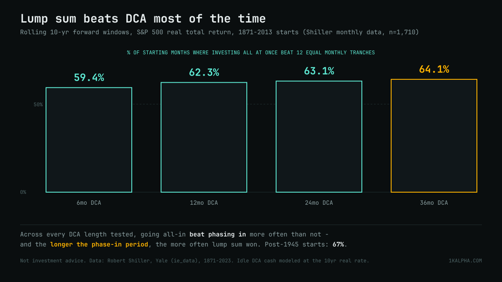
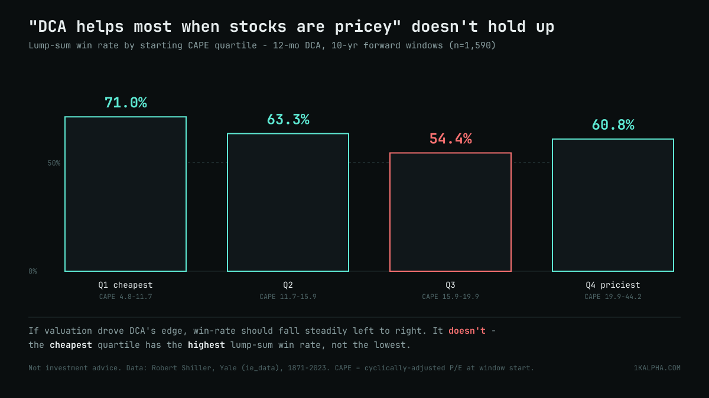

Lump Sum vs. Dollar-Cost Averaging: A 152-Year Test
Every time the market sits near record highs -- which is where it is right now, on the back of an AI-driven run that's pushed the ten largest S&P 500 names to the biggest share of the index on record -- the same question resurfaces: if you had a lump sum to invest, should you put it all in at once, or spread it out over a year to soften the risk of buying the top? The standard answer, repeated across financial media for over a decade, traces back to Vanguard's often-cited research (first published in 2012, later updated) comparing lump-sum investing against dollar-cost averaging (DCA) in U.S., U.K., and Australian markets: lump sum wins roughly two-thirds of the time. That's a specific, checkable claim, built on a sample that -- in the U.S. leg -- mostly covers 1926 onward. I reran it against Robert Shiller's 152-year S&P 500 dataset to see how it holds up over a much longer record, and whether a popular refinement of the claim -- that DCA's edge is bigger when valuations are already rich -- actually shows up in the data.
Short version: the headline claim roughly holds up -- lump sum beats DCA in 59-64% of rolling 10-year windows since 1871, depending on how long the DCA phase-in runs, and the edge is stronger, not weaker, since 1945. But the valuation refinement does not hold up: the cheapest starting-valuation quartile has the highest lump-sum win rate in the data, not the lowest.
Methodology
I used Shiller's monthly S&P 500 dataset (price, dividends, CPI, the cyclically-adjusted P/E ratio known as CAPE, and the 10-year Treasury yield), which runs from January 1871 through the most recent fully-populated month, June 2023 -- 152 years, 1,829 months. For every possible starting month, I simulated investing a fixed notional sum two ways and compared the real (inflation-adjusted), dividend-reinvested value of each 10 years later:
- Lump sum -- the full amount invested in the index on day one.
- DCA -- the same amount split into equal monthly tranches (tested at 6, 12, 24, and 36 months), each invested on schedule regardless of what the market has done. Money not yet invested is modeled as earning a real return equal to the 10-year Treasury yield minus that month's realized inflation -- a proxy for parking idle cash in interest-bearing instruments while it waits its turn.
Both paths are measured at the same future date, 10 years (120 months) after the start, which is the standard way this comparison is made (Vanguard's updates and a separate Morgan Stanley analysis both use multi-year rolling windows for the same reason: it isolates the cost of waiting from everything else).
The headline numbers
Across every rolling 10-year window from January 1871 through June 2013 (n=1,710 starting months, so the window's end always falls within the dataset):
| DCA phase-in | Lump sum wins | Median DCA ÷ LS wealth | Biggest DCA win (start) | Biggest LS win (start) |
|---|---|---|---|---|
| 6 months | 59.4% | 0.989 | 1932-03 (1.36x) | 1933-03 (0.72x) |
| 12 months | 62.3% | 0.978 | 1931-08 (1.78x) | 1933-03 (0.66x) |
| 24 months | 63.1% | 0.962 | 1931-03 (2.01x) | 1932-06 (0.57x) |
| 36 months | 64.1% | 0.949 | 1929-09 (2.42x) | 1932-06 (0.54x) |
"DCA ÷ LS wealth" is the real ending value of the DCA path divided by the lump-sum path 10 years later; below 1.00 means lump sum ended with more. "Lump sum wins" is the share of the 1,710 starting months where that was true.
Two things stand out. First, the direction matches Vanguard's finding at every DCA length tested -- lump sum wins more often than not, and the median outcome favors lump sum too, not just the win-rate count. Second, the longer the phase-in, the more often lump sum wins -- going from a 6-month to a 36-month DCA schedule moves the win rate from 59.4% to 64.1%. That's intuitive once you sit with it: a longer DCA period means more months spent partly in cash rather than in an index that has historically drifted upward, so the "cost of waiting" compounds the longer the wait runs.

Is this just the Depression and a few bad decades?
The biggest DCA wins in the table above cluster almost entirely around 1929-1933 -- which raises the obvious question of whether a handful of catastrophic starting points are propping up the whole case for DCA. Two checks: dropping every window that starts in the 1929-1939 decade entirely still leaves lump sum winning 63.7% of the time (barely different from the full sample's 62.3%, 12-month DCA). And restricting to starts after 1945 -- a cleaner, more modern sample with none of the Depression-era chaos -- actually strengthens the case for lump sum: 67.0% of windows favor it, rising to 70.9% for starts in 1990 or later. The result also holds across horizons: 3-year, 5-year, and 10-year forward windows all land within a point of each other (63.2%, 63.1%, 62.3%, 12-month DCA). This isn't an artifact of one bad decade -- if anything, the postwar bull market has been a better environment for "just invest it now" than the full 152-year record.
Does the "DCA helps more when stocks are expensive" refinement hold up?
A common hedge on the lump-sum advice -- repeated across a lot of the personal-finance commentary on this topic -- is that dollar-cost averaging becomes more worthwhile specifically when valuations are already stretched, since a rich starting price raises the odds of buying right before a drawdown. It's a reasonable-sounding refinement, and it's exactly the kind of claim this dataset can test directly: Shiller's CAPE ratio (cyclically-adjusted P/E) is a standard starting-valuation measure, and I already have it attached to every window above.
Splitting the 12-month DCA, 10-year-horizon sample (n=1,590 windows with a valid starting CAPE) into quartiles by starting CAPE:
| CAPE quartile | CAPE range | Lump sum wins | Median DCA ÷ LS wealth |
|---|---|---|---|
| Q1 (cheapest) | 4.8 – 11.7 | 71.0% | 0.956 |
| Q2 | 11.7 – 15.9 | 63.3% | 0.973 |
| Q3 | 15.9 – 19.9 | 54.4% | 0.991 |
| Q4 (priciest) | 19.9 – 44.2 | 60.8% | 0.984 |
If the valuation refinement were right, the win rate should fall roughly monotonically from Q1 to Q4 as starting prices get richer. It doesn't -- the cheapest quartile has the highest lump-sum win rate in the whole dataset (71.0%), and the priciest quartile (60.8%) is close to the all-sample average, not meaningfully below it. The lowest win rate actually belongs to the middle of the valuation range.

That doesn't mean valuation is irrelevant to this decision -- a separate post on this blog found CAPE does have real predictive power for 10-year forward returns on their own. But "returns are likely to be lower from here" and "therefore you should spread out your lump sum rather than invest it now" are two different claims, and only the first one is well supported here. The quartile with the single worst lump-sum track record (Q3, CAPE 15.9-19.9) is a thoroughly unremarkable, middle-of-the-road valuation level -- not the kind of extreme multiple that shows up in today's discourse.
What DCA actually buys you
The flip side of "lump sum usually wins" is that when DCA wins, it tends to win by a lot, and the dates line up with exactly the kind of experience a nervous investor is trying to avoid. The single best outcome for DCA in the entire dataset starts August 1931: a lump sum invested then was still down sharply a year later as the Depression-era crash continued, while the DCA investor kept buying in at progressively lower prices through 1932 -- ending the 10-year window with 78% more real wealth than the lump-sum path. Every one of the eight best outcomes for DCA starts in 1931 or 1937, the two Depression-era stretches where stocks kept falling hard well after an initial lump-sum entry.
The mirror image is just as informative: the single best outcome for lump sum starts March 1933 -- essentially the Depression-era bottom -- where going all-in immediately captured a recovery that a 12-month DCA schedule only partially caught, ending with 51% more wealth than the phased-in path. A similar, smaller version of the same pattern shows up starting March 2009, right at the financial-crisis low. Lump sum's edge isn't just "stocks tend to go up, so being in sooner is better" in the abstract -- a meaningful chunk of its biggest wins are investors who happened to go all-in at generational lows, which nobody can identify in real time. DCA's whole case is that it trades away some of that upside for protection against the opposite, symmetric risk: going all-in right before a multi-year grind lower.
Limitations
- Idle-cash assumption matters at the margin. As shown above, swapping the 10-year-yield proxy for 0% real moves the 12-month headline from 62.3% to 65.8%. The true number for a real investor depends on where they'd actually park waiting cash and the rate environment at the time.
- No taxes, fees, or transaction costs on either path. These would modestly favor lump sum, which involves one transaction instead of several.
- Monthly data can't see within-month timing. A DCA tranche is modeled as landing on the first of the month at that month's price; a real DCA plan buying on the 1st versus the 15th of a volatile month would see somewhat different results.
- U.S. market only. Vanguard's original research also tested the U.K. and Australia and found the same broad pattern; this post only reruns the U.S. leg, over a longer history.
- This is a backtest of a mechanical rule, not advice. It says nothing about any individual's cash flow needs, risk tolerance, or the behavioral value of a plan that's actually easier to stick to -- which is Vanguard's own stated reason for still recommending DCA to anyone who'd otherwise be tempted to delay investing indefinitely while waiting for a better entry point.
Bottom line
- The core Vanguard-style claim holds up over 152 years, not just the roughly 90-year sample it was originally tested on: lump sum beats DCA in 59-64% of rolling 10-year windows depending on DCA length, and the edge is bigger, not smaller, since 1945.
- "Spread it out because valuations are rich" is a weaker claim than it sounds. The cheapest-valuation quartile in this dataset has the highest lump-sum win rate, not the lowest -- valuation predicts forward returns reasonably well on its own, but that's a different claim from "therefore DCA helps more when stocks are expensive."
- When DCA does win, it's not noise -- it's Depression-style, multi-year grinds lower, the exact scenario the strategy is meant to protect against. The question worth asking isn't "which wins more often" but whether the insurance is worth paying for in expectation, which is a judgment call this backtest can inform but not settle.